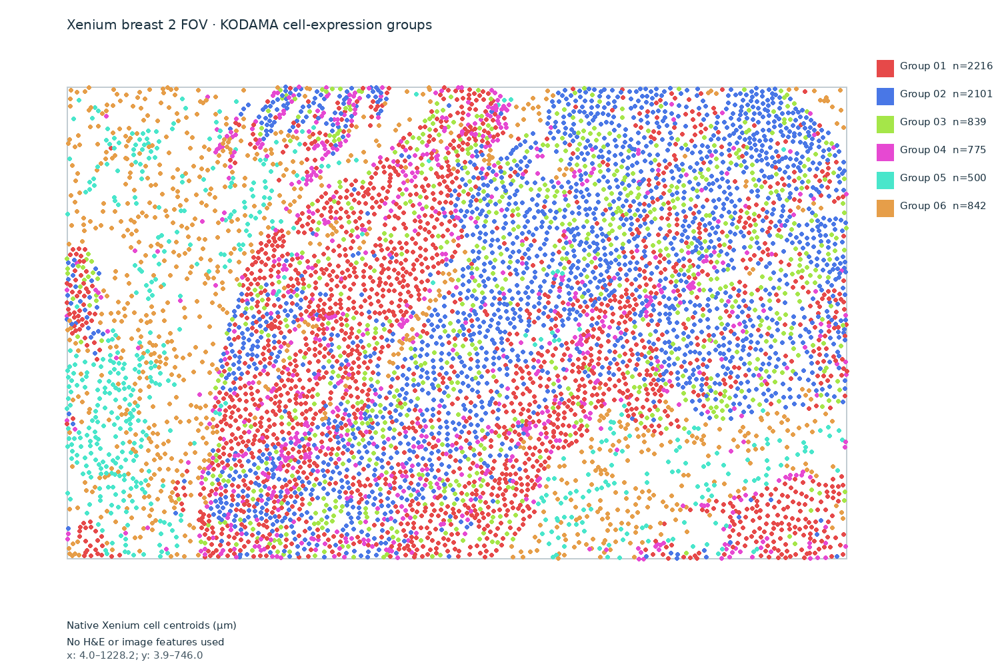
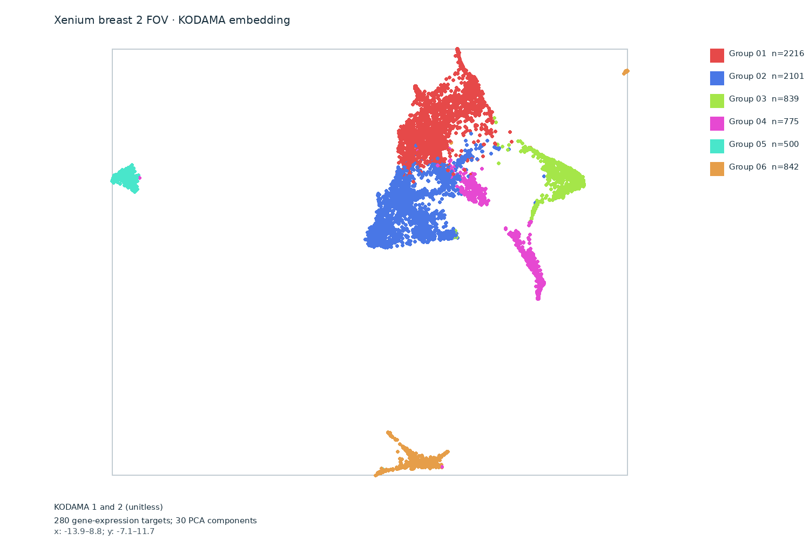
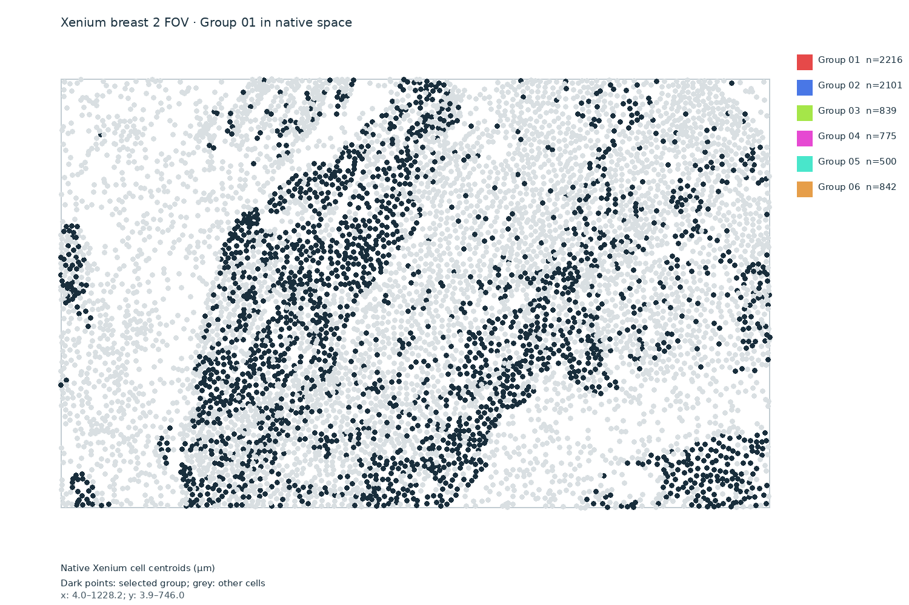
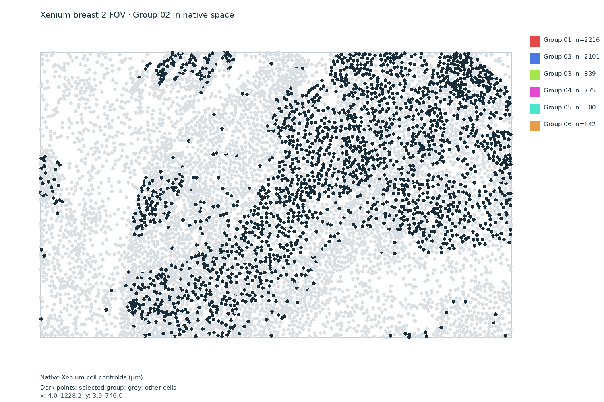
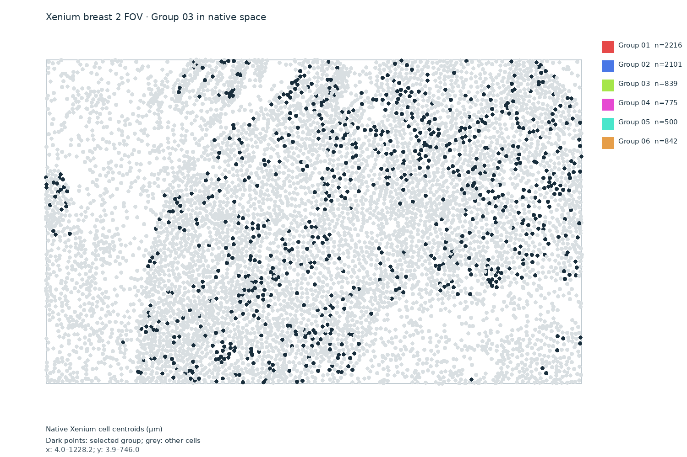
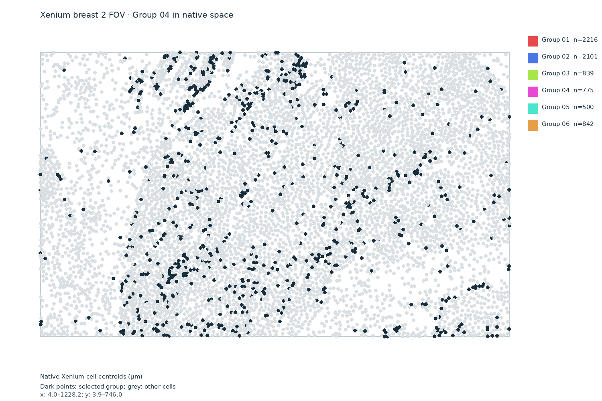
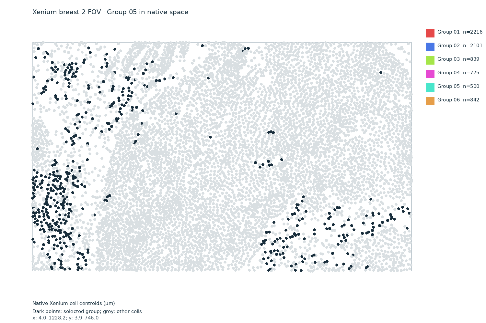
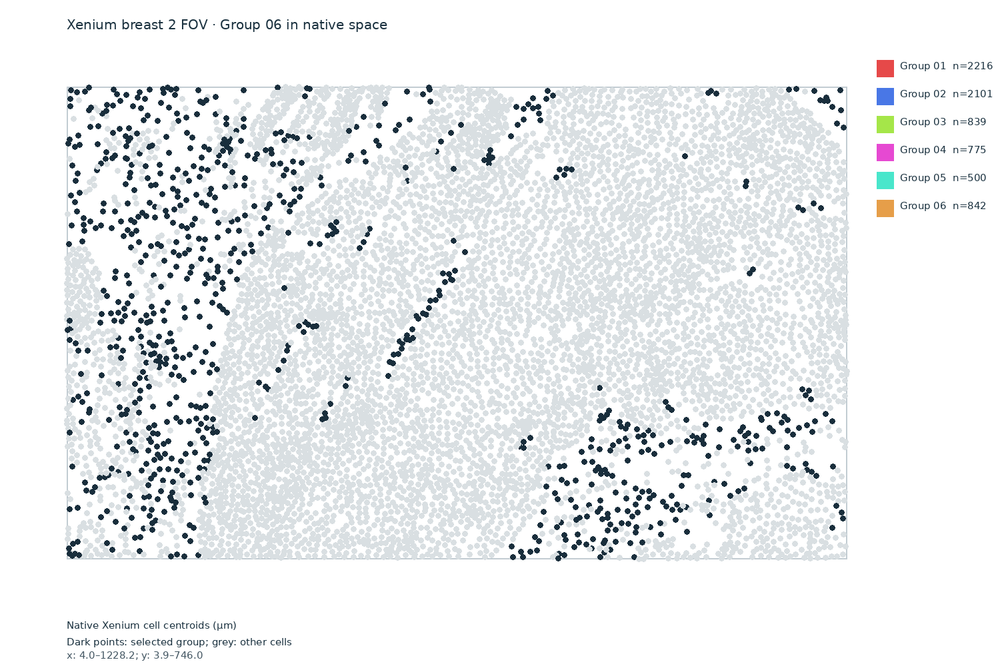

Native spatial groups
The positions are the source Xenium cell centroids in micrometres. KODAMA and Leiden used gene expression only; coordinates were used to display the groups. Two cells with no measured gene counts were excluded.


Interpretation: These are anonymous exploratory expression groups, not cell types, pathology labels, H&E image classes, or Bora polygon segmentation. Group 04 has lower measured gene counts (median 23) than the other groups (median 75–159), so it may reflect technical variation.
Inspect each group






Download and provenance
Download cell coordinates, counts and group labels
Verified analysis provenance · 10x Genomics example datasets
Input: official Xenium human breast 2-FOV output, 7,275 native cells, 280 measured gene-expression features. Analysis: pinned KODAMA 0.99.7, 30 gene-expression principal components, 15-neighbor graph, Leiden resolution 0.25. The complete native source and reusable input matrix are retained locally.